Fun Projects for your LEGO� MINDSTORMS� NXT!
|
|
Fun Projects for your LEGO� MINDSTORMS� NXT! |
Three Stages to Better Photos of LEGO Creations
| To get beyond the results of the
Stage 1 fixes, we need to start taking
pictures without using the flash, in order to control the lighting
better. In addition, we will want to adjust the camera settings to
use a very narrow lens opening (high f-stop number) to get sharper focus
and better details. However, the combination of these two means
that the camera will require a long exposure (shutter speed) in order to
get enough light, and this will require using a tripod to hold the
camera steady enough so that the picture will not be blurred. To be able to use the right camera settings for this stage, your camera must have some degree of manual control over the exposure. See the Camera Requirements for details. The improvements at this level have mainly to do with
getting sharpness and fine detail. If all you want to do is take a
single picture of your whole robot to post to the web in a size small
enough for a typical web photo, then you probably don't need to bother
with this, and the Stage 1 improvements are
probably enough. However, if you want to post a high-resolution
picture, or crop down to make a close-up (such as in the building
instructions on nxtprograms.com), then a
tripod will help a lot, as shown in the comparison below, which shows a
small portion cropped out of the full-resolution photos. |
|
|
|||||
|
Flash |
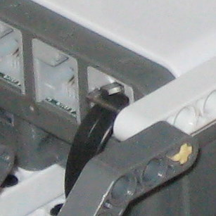 |
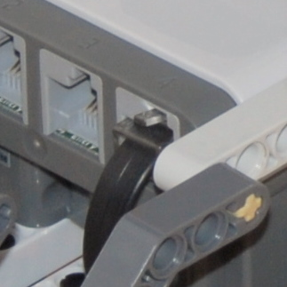 |
||||
|
Tripod |
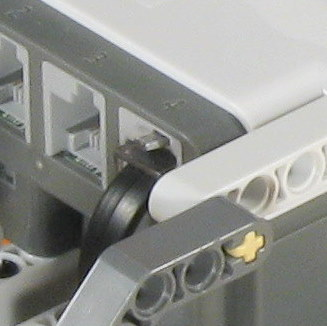 | 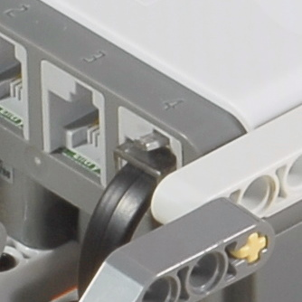 |
You will also notice from this comparison that the SLR takes significantly sharper and cleaner photos than the point and shoot camera. This is not due to a difference in the resolution (although the D200 has 10 Megapixels and the A570 has 7 Megapixels, the zoom was slightly different in these shots, so that the resulting resolution of this cropped portion is almost the same), but rather due to the much larger sensor of an SLR, which results in a significantly better signal-to-noise ratio of the light at the sensor. So there's a reason why not all cameras will fit in your pocket... |
| It is possible to take a highly detailed photo on a
tripod without a flash using only the available light that is already in
the room, as in this example: |
|
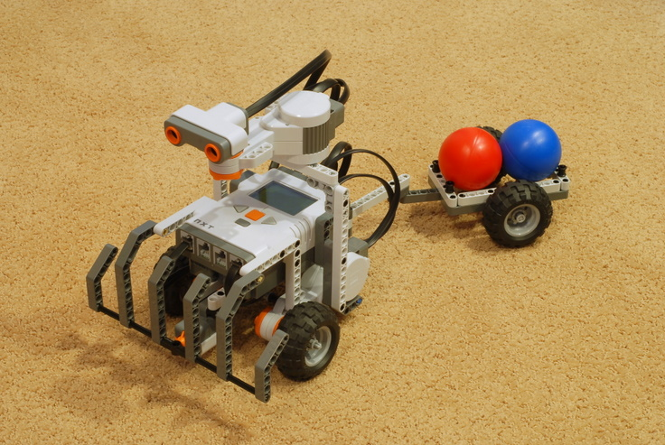
Nikon D200 on tripod, no flash, normal room lighting only |
However, there are a couple of problems with using only the room lights. First, the robot is lit mostly from the top, which makes the lower portions hard to see, and there are a lot of shadows. Second, as a practical matter, this photo required a 15 second (!) exposure, which is long enough to be annoying if you have several pictures to take. So, if you have some external lights, such as desk lamps, you can use them to light up the model to improve these problems.
To eliminate as many shadows and dark areas as possible,
and to help highlight the edges and details of the parts, it works well
to have three external lights: two lighting the model directly from the
sides, and the third lighting it mostly from the front, as shown in this
arrangement: |
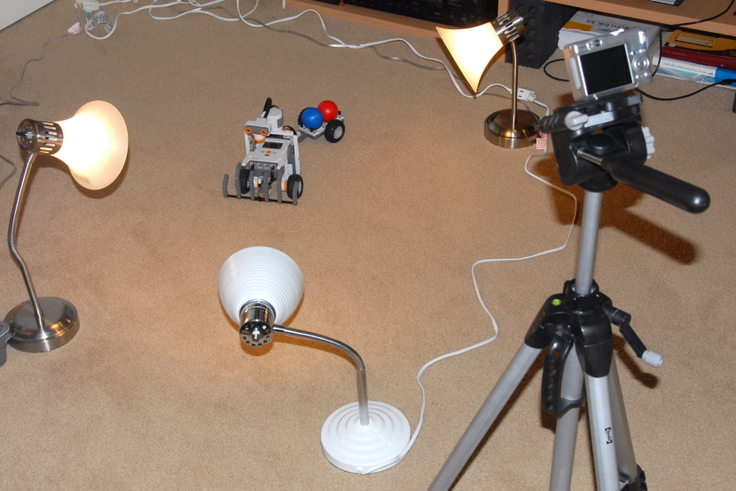
Using three desk lamps with incandescent bulbs, arranged as shown above, produces the following photo: |
|
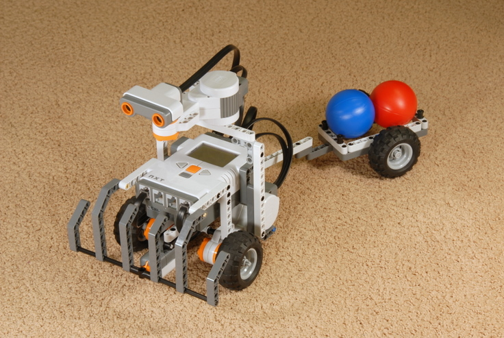
Nikon D200 on tripod, no flash, three incandescent desk
lamps (left, right, front) |
Note how the details pop out more, and the underside of the robot is much easier to see. You can further fine-tune the lighting by changing the position of the lights to get more light where you want it. |
| If you don't have three external lights or don't want
to bother setting them all up, here is a trick you can use to get pretty
good results with a single external light. If you just set up a
single light shining at the robot from one angle, it would only be lit
from one side and have huge shadows on the other side. However,
using a single desk lamp in addition to the room lights, the exposure in
this case will still take 8 seconds to get enough light. So, you
can take a single desk lamp, hold it in your hand, and move the light
around during the 8 seconds of exposure time to help light up all areas
of the robot. In the result below, I slowly panned the light in a
half circle from the right side to the front then to the left side.
Using this technique, you could even linger a little longer on the dark
areas or areas that you want to call attention to in order to light them
up a little better. |
|
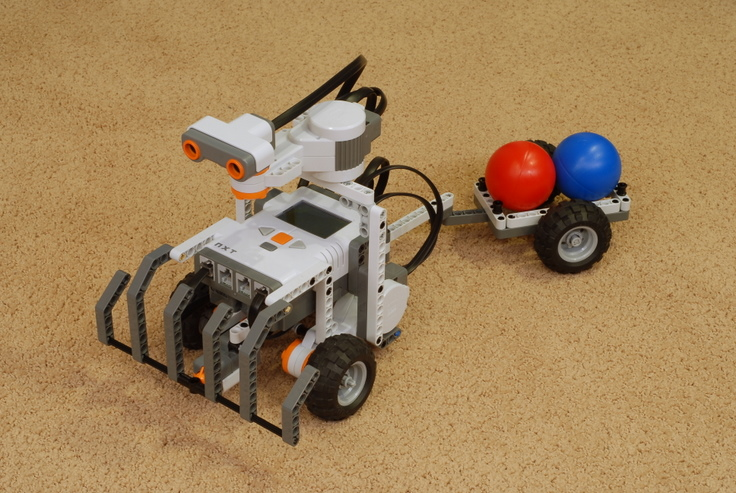
Nikon D200 on tripod, no flash, one desk lamp panned from
right to left |
The following sections detail the camera settings needed to get good tripod photos, assuming the use of three external lights. |
|
|
Tripod Settings for Point and Shoot Cameras |
Unfortunately, your automatic camera, smart as it is, does not know that it is on a tripod (hmm, what if there was a touch sensor in the tripod mount hole?...). So, if you turn the flash off, then in an attempt to get a short enough shutter speed for non-blurry photos, the camera will make a number of choices that are not what we want for good tripod photos, so we will need to manually change these settings.
Using these settings on the Canon A570 results in the following photo: |
|
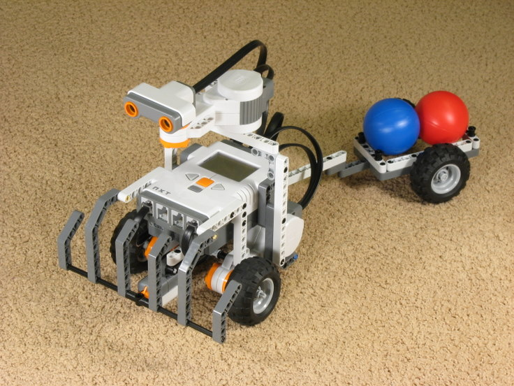
Canon A570 on tripod with three incandescent lights
(left, right, and front), |
|
|
Tripod Settings for SLR Cameras |
Similar to a point and shoot camera, an SLR camera does not know that is on a tripod, so the automatic choices it would make are not appropriate. We need to manually change the settings as follows:
Using these settings on the Nikon D200 results in the following photo: |
|
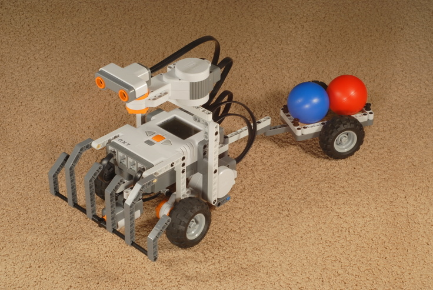
Nikon D200 on tripod with three incandescent lights
(left, right, and front), |
When using external lights, getting the "white balance" right can be a little tricky, since the color of the light given off by various light bulbs differ. With your camera's white balance set to automatic, it may or may not make a good guess on the white balance. Errors in the white balance can be corrected somewhat using Picasa's Neutral Color Picker, but only to a point. Further corrections could be made in a more advanced program such as Adobe Photoshop, especially if you take your photos in "RAW" format rather than JPEG, but an easier solution if you have a lot of photos to take is to use daylight fluorescent light bulbs, which are designed to give off a precise light color that imitates full-spectrum sunlight.
The following sequence of photos shows a progression of
photos with increasingly more accurate white balance. |
|
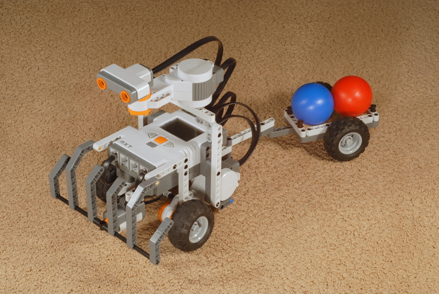 Incandescent lights, White Balance "Automatic" |
|
Incandescent lights, White Balance "Incandescent" |
|
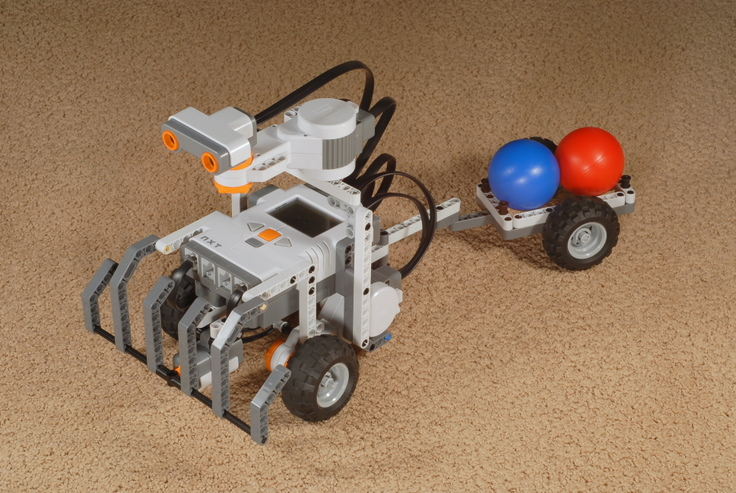
Incandescent lights, White Balance "Incandescent", |
|
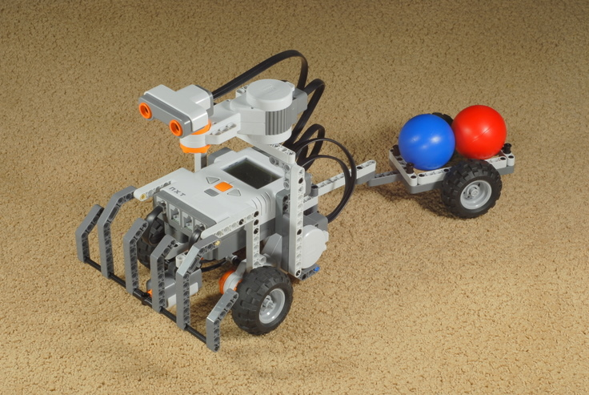 Daylight/5000k Florescent Lights, White Balance "5000k" |
Note that in the last picture with the daylight florescent lights the carpet color looks much greener. Both this picture and the incandescent photo above it actually have a "correct" white balance, the difference just comes from the actual appearance under the different light bulbs. My carpet really does look brownish at night under incandescent lights and a little greenish during the day when daylight shines on it. The important part is that the colors in the robot are correct. The whites are white, the grays are gray, and the blacks are pure black. Note that the last picture is slightly the best in this regard (look at the tires). |
|
|
||||
| Three external incandescent lights (left, right, front) | |||||
| No Flash | |||||
| Camera about 3 feet from robot | |||||
| About 3x zoom | Focal length 50-100mm | ||||
| Aperture Priority mode at f/8 | Aperture Priority mode at f/16 | ||||
| Sensitivity manual at ISO 80 | Auto ISO off, ISO 100 | ||||
| White Balance "Tungsten" | White Balance "Incandescent" | ||||
|
Self-timer with 2 second delay |
|||||
|
Use digital photo editing software to adjust the lighting afterwards if necessary |
|||||
|
|
{kind=link}
{kind=link}
{kind=link}
{kind=link}
{kind=link}
{kind=link}
{kind=link}
{kind=link}